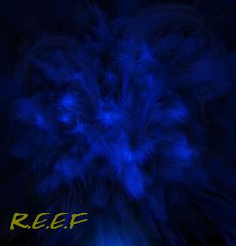

Forums galactiques > Assemblée Galactique : diplomatie officielle > SENA
Pages : 1
| Sena Respect diplomatique : 18  04/04 ETU 15:47 | Score : 18 Détails Au quatorzième rang de la sixième rangée, un être étrange était assis.
Il n'était pas ce qu'on peut appeler un être humain. Il était une entité...une chose aux apparences humaines, mais aux tissus plus énergétique plus que concret. Des décharges électriques parcouraient son corps, le traversant de part en part, ou s'envolant au delà de son « corps ». Au niveau de ce qu'on pouvait penser être le coeur, tournoyait une lumière bleu vive d'ou semblait provenir toute l'énergie qui émanait de l'être. L'entité se leva et se dirigea vers la scène qui surplombait la grande assemblée. D'une démarche fluide, presque féline, d'un pas qui défit l'apesanteur, il gravit les marche. Il approcha ses « lèvres » du micro. Sa voix était caverneuse, pleine d'écho, une sonorité grave et assurée. « - Salutation commandants d'Espérance. Je peux constater à vos regards surpris que mon apparence vous étonne, vous effraie peut-être... Pour que vous compreniez bien que je ne suis pas un rêve mais bien un être concret comme vous tous, je vais de suite vous conter mon histoire. Si étonnante soit elle, je vous demande de l'écouter avec attention jusqu'au bout, et surtout de la croire... » « Il y a plusieurs centaines d'années, sur un astre nommé Wattearth, une magnifique planète bleue en pleine croissance technologique, une époque ou mon espèce, l'homme tentait encore de découvrir les mystère de l'espaces et son infini grandeur, j'exerçait la profession de scientifique spécialisé dans la recherche spatiale." "Je me nommais...je ne sais plus...Bref, je me trouvait dans une navette en orbite autour de mon monde avec une équipe de chercheurs depuis plusieurs semaines déjà, quand le fait qui changea ma vie se produit" " J'étais en sortie sur une des lunes de la planète, elle s'appelait Mysterious...Son nom lui venait de la matière inconnue, impalpable qui constituait son noyau. Une source d'énergie mystérieuse qui était le soutien de cette énorme rocher. Nous pensions découvrir comment maîtriser toute les possibilités que donnait le contrôle de la gravité et...cela serait trop long à expliquer...enfin pour résumer, l'homme dans sa quête incessante de pouvoir, avait voulu maîtriser une chose qu'il le dépassait. Ma mission me mena donc au coeur de "Mysterious", à la source du mystère. J'arrivai vite sur les lieux et je fut bouleversé par le spectacle qui s'offrait à moi. Je me tenait devant une immense sphère énergétique d'une couleur saphir exceptionnelle de nuances et de mélanges. De éruption électrique était visibles à sa surface. Presque impossible à discerner à cause de la vitesse, cette sphère tournait sur elle même. Jamais je n'avais à un spectacle aussi charmeur et effrayant. J'accomplie donc ma tâche, notant mes observation sur un carnet, prélevant des échantillons de roche à proximité de l'entité ect. Je me préparait à repartir quand je remarquais une sorte d'imperfection loin dans la sphère énergétique, pas une imperfection, mais un point plus foncé...un coeur. Je me rapprochait jusqu'au bord de la falaise pour pouvoir l'assurer que je n'était pas victimes d'hallucinations...mais je m'approchais trop près du bord, et bêtement je suis tombé dans le précipice, me précipitant vers la substance inconnue. A partir de ce moment, tout s'accéléra. Je pénétrai dans le noyau. Je chutait à présent dans un univers ou la seule couleur est le bleu, des éclairs me traversaient...mais je souffrait pas. Puis je sentit mon corps s'en aller. Comment vous expliquer cette sensation...c'est différent de perdre un membre ou autre je suppose...c'est comme se faire abandonner par une partie de soit-même, être arracher de son corps concret pour laisser son âme et son esprit vagabonder à leur guise. J'ai donc...par un phénomène que je ne m'explique toujours pas, perdu mon enveloppe corporelle...j'était encore vivant. Je faisais maintenant corps avec "Sena", c'était en effet le nom de cette chose immatérielle. Je contrôlait les éclairs, je maîtrisait la matière, je la maniait selon mes désirs, mieux, ce contrôle me semblait inné, j'aurais juré avoir toujours sut le faire. Je me créai donc un corps semblable aux hommes avec "Sena". Ce fut l'acte le plus horrible et irréfléchi que j'aurais pu commettre. Malheureusement le processus avait débuté, et plus rien ne l'arrêterai. L'équilibre était rompu. Mysterious entama sa chute vers Wattearth une chute apocalyptique qui ne laissait aucune chance aux habitants de la planète. La lune finit par s'écraser à la surface de l'astre...et tout deux furent détruites." Un long silence succéda cette annonce, l'entité semblait réfléchir, non...méditer. "Je fus le seul survivant du cataclysme...évidemment, je ne suis pas vraiment matériel... Depuis ce temps là j'erre dans l'espace. Il y a quelques années, j'ai découvert Espérance...et me voilà devant vous aujourd'hui. Que dire de plus...Simplement, ne jugez pas un être inconscient et imbécile pour ces actes passés, laissez le vous prouvez sa valeur... |
Pages : 1
Forums galactiques > Assemblée Galactique : diplomatie officielle > SENA